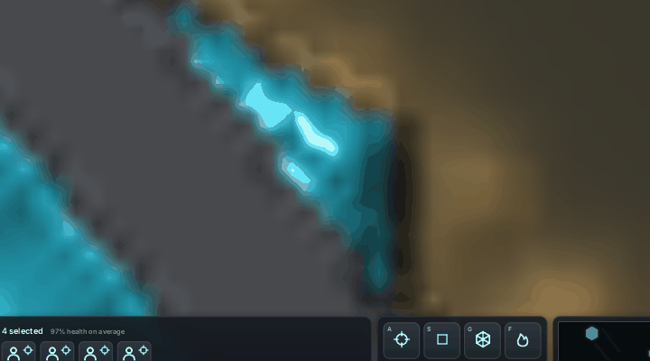
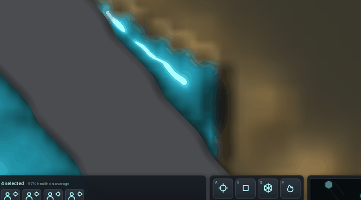
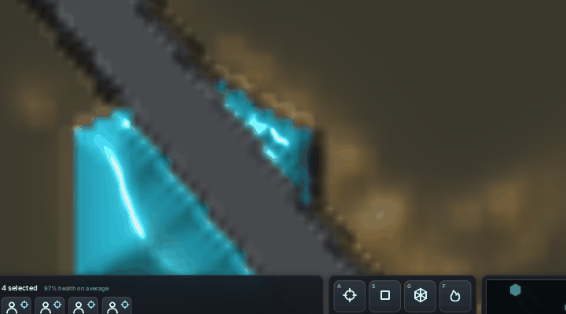
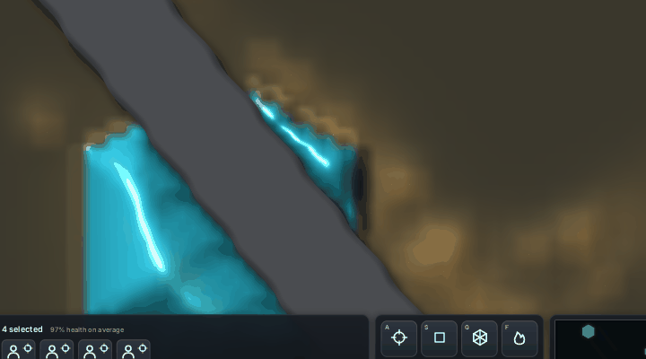
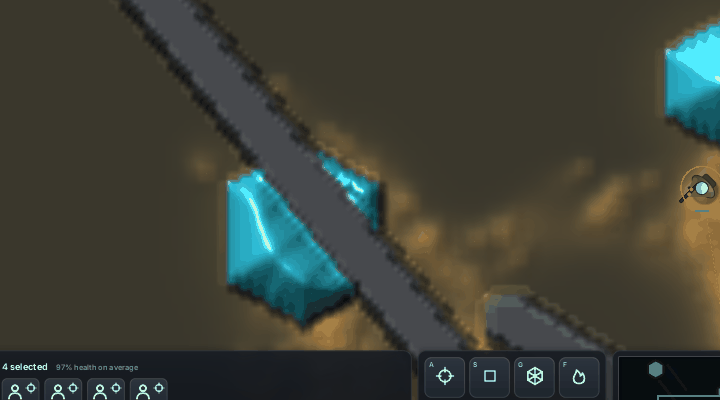
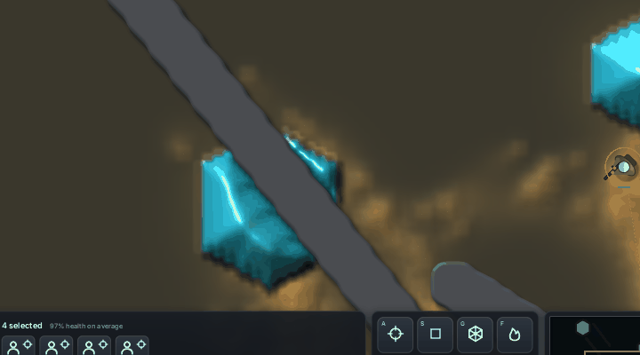
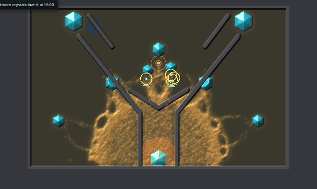
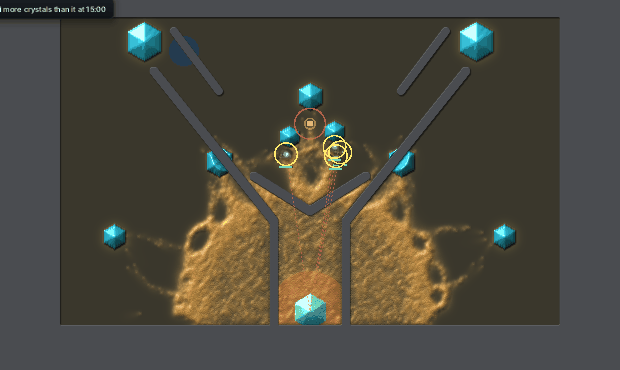

Rock, walls and rubble are whole cells in the simulation. They were drawn as cells too, so their edges stepped every cell and carried a dark band a cell wide. Now the view works out each edge at the screen pixel from a smooth field of the cells, so every zoom gets a one-pixel antialiased edge and a short soft shadow. The terrain is the same cells; only the drawing changed.
Each pair is the same round (rush hand, seed 1) from 2 to 8 game seconds, before on the left and after on the right. The camera holds still on the left ridge.








| Build | GPU tail p50, ms a frame | p95 |
|---|---|---|
| Before (main) | 37.1-38.0 | 44.4-47.6 |
| Edges worked out a pixel at a time | 54.6 | 66.7 |
Shipped: smoothing once a cell in prep, far cells skipped | 47.0-49.0 | 58.2-60.1 |
Larder World bench, 8 game seconds, idle hand, 1280 x 800, on the cloud's software Vulkan (llvmpipe), which runs shaders on the CPU. The GTX 1070 timing waits until the PC is free.
The crystals' hexagons come from the slime thread's next PR; this thread then makes them show their charge. The open ground's colour (dark, cool, low saturation) is the next step after that.